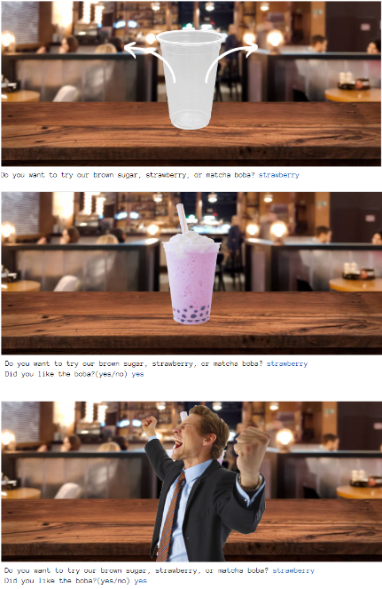
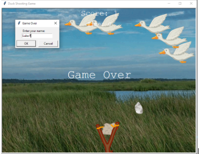

Home
Portfolio
About Me
This is my Portfolio Page!
First Project: Boba Tea Maker!

This project is all about making your own boba tea! You can choose your own flavor (strawberry, matcha, or brown sugar) and can even leave a review for us! Depending on your response, we give you a happy, sad, or confused face. We used simple turtle commands on trinket to create this program.
My second project: Duck Hunting Game

We created ducks that fly in the air in random patterns. The player moves a slingshot that shoots rocks at the ducks in the air. When the duck is hit by a rock, the duck disappears and a new duck is spawned in a different random location. A scoreboard keeps track of how many ducks are hit and there is a timer that keeps track of how much time has passed. When the time has run out, the game ends.
Third Project: Bunny Jump Game
.png)
This game is made from Scratch. The player controls a rabbit in the game. The goal is to jump over as many obstacles as possible. The game ends when the rabbit hits an obstacle. The rabbit's costume and the background change every 10 seconds.